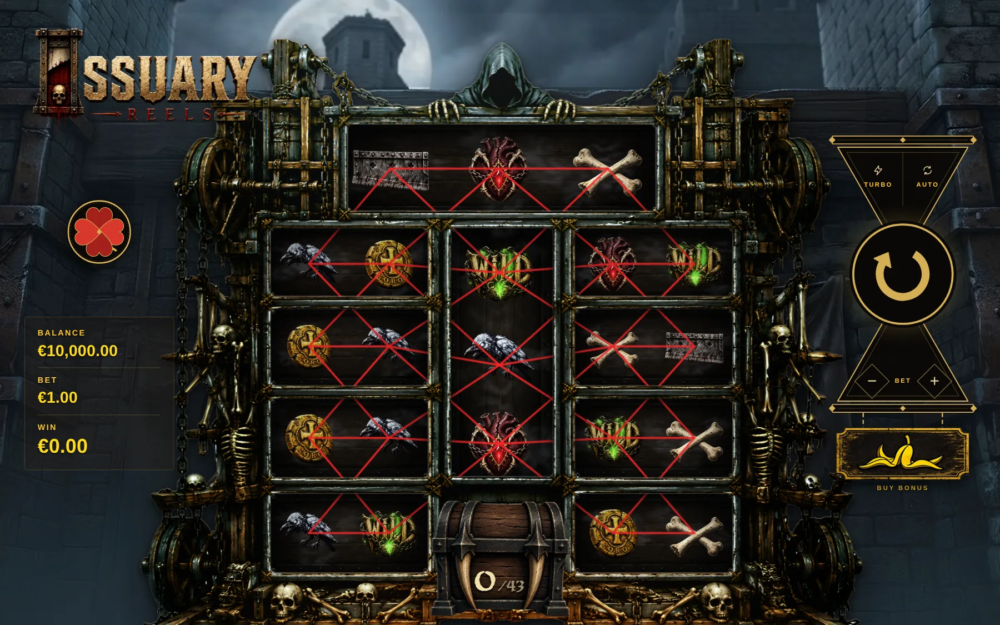
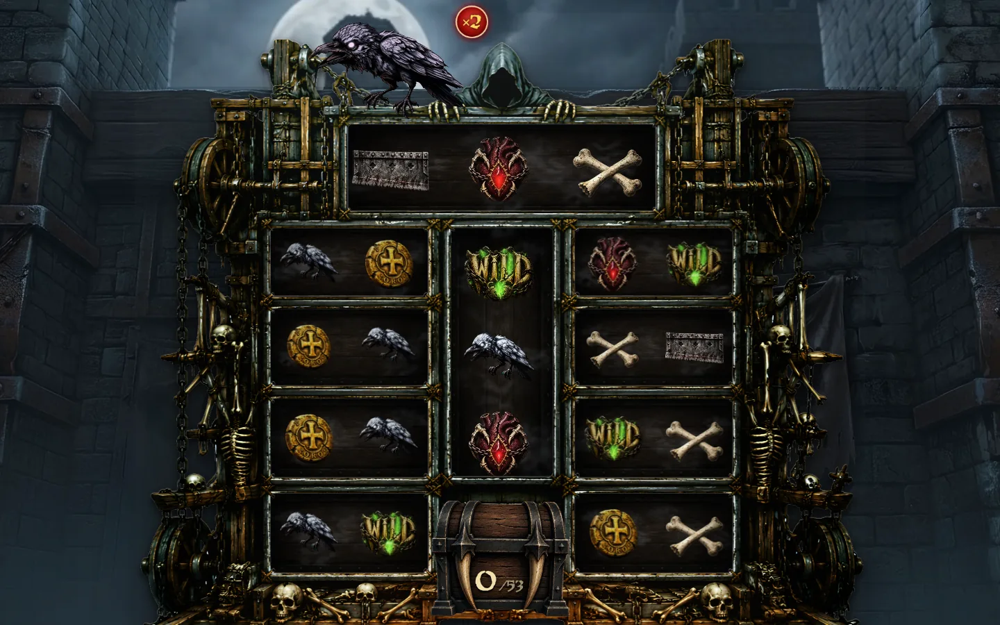
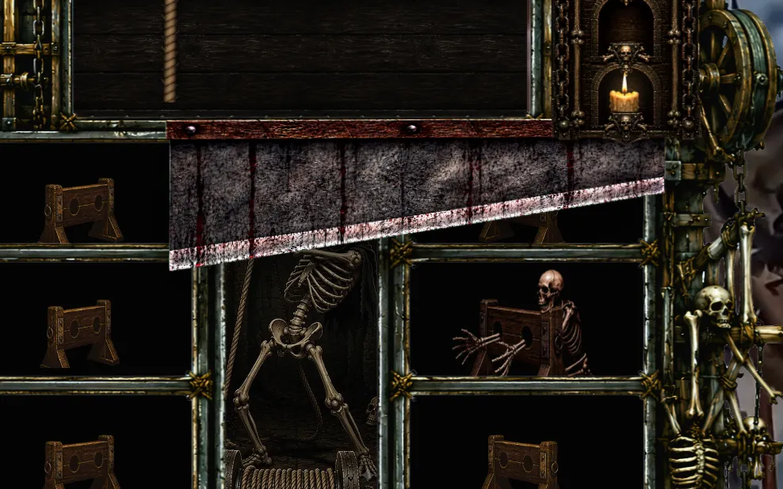
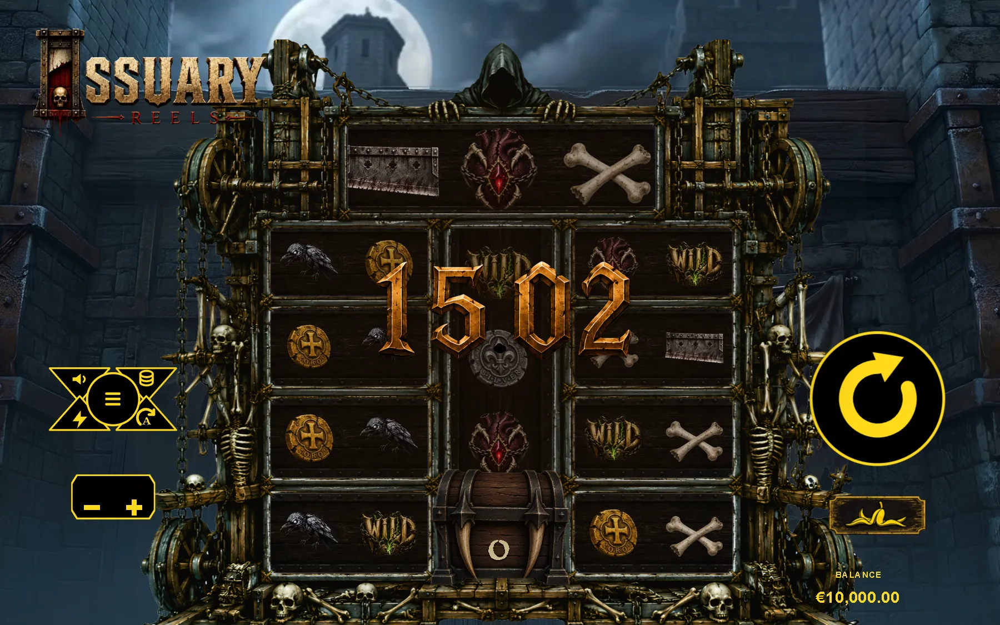

My role: concept, rules, visual and audio direction, and iteration. I use Claude Code and Codex to implement specifications, and generative AI to develop visual assets through detailed prompts and selection.
A distinctive board: independent reels inside a ribcage, joined by 173 paylines designed for that shape.
Three interconnected bonus features in design: the Raven chain, the Chest gamble and the Execution Bonus. A fourth is in development.
A concrete iteration: the big-win counter uses reward-size tiers aligned to musical beats. The source is linked below; final economy validation is still pending.
The numerical values in this case study are development specifications or targets, not validated release results.
Solo prototype in development. The public demo is an earlier build; design notes and images can show later revisions. Code and visual development are AI-assisted. Economy targets are not validated results.
The loop · 30 seconds
One spin. Several connected systems.
Spin → resolve. Symbols stop; valid paths award a result.
Blades → chest. Cut symbols leave gaps and contribute to stored progress.
Ravens → wilds and continuation. A successful stone throw changes the board and can extend the sequence.
Bonus triggers → separate features. The chest offers a collect-or-gamble choice; the Execution Bonus uses candles and cuts.
Resolve the feature → return to the base game. Animation and audio communicate each transition.
These are connected branches, not a guaranteed sequence of events on every spin. The public demo may precede the design described here.
01 · The idea
A world, a machine, a feeling.
Ossuary Reels is a solo game-design prototype built around a ribcage-shaped board. I use it as a case study in turning a visual idea into a set of connected rules, then refining how those rules are presented.
The design challenge is to make an unusual shape playable, give its mechanics a shared visual language and use animation and sound to make each event readable and expressive.
This case study follows three threads: art direction, mechanics and game feel. It documents work in progress; the final build, artwork and validation will replace the current development material.
02 · Art direction
Build a visual language around the bones.
The ribcage is both the visual anchor and the structure of the game. The direction brings bone, wood, ravens and mechanical movement into the same world.
Intent
A dark-fantasy machine with a recognisable silhouette, rather than a conventional rectangular board.
Direction
Use the anatomy to organise the scene, then carry the same world into symbols, bonus moments and interface.
Constraint
The atmosphere must leave the rules and important events readable. Composition and motion need to support the player’s attention.
Current development imagery. Final assets and detailed credits will be updated with the release.
The visual assets are AI-generated. My contribution is the brief, visual direction, prompt iteration and selection. I specify concrete traits and compare alternatives rather than ask for a finished style in one instruction. These images are not presented as hand-drawn work.
Example · Directing the raven
My prompts describe specific choices: for a raven, that might mean a 1970s anime reference, a larger head and bones in the wings. I refine the instructions and compare several variations before choosing the one that fits. My process is to define the character, evaluate what the tool produces and keep directing the details until the design works for the world.
The gallery shows selected development images. A step-by-step image history and the tools used for each animation are not documented here yet.
The board is a ribcage of independent reels: a top rib, a centre spine and four ribs on each side, with the chest at the bottom. I designed the paylines around the bones. The challenge is to preserve that silhouette while making valid routes and winning symbols understandable.

Debug view: the payline network over the board. Every red line is a path a win can follow.
EARLY CONCEPTIN THE GAME
Goal
A distinctive board that still reads at a glance.
Decision
Keep the ribcage layout, but build it as a working machine with clear lanes.
Rule
Lines start on the left and may step one row up or down per reel: 173 paths, three of a kind or wild to pay.
04 · Mechanics
Three bonus features designed to feed each other
Each is built around a feeling and a mechanical role. These are development designs; the public demo is an earlier build. A fourth feature is in development.
01
The Raven chain
Give each extra spin a visible cause, and leave enough time to read the stone throw.
How it works
When a blade cuts a crow, the raven perches above the board. Ravens on the same side stack their multiplier: a black one adds +1, a golden one +10, +25 or +50.
A skeleton steps out of a door and throws a stone. If it hits, the raven falls through its column and every cell it crosses becomes a wild with its multiplier.
Every raven the stone kills grants one more free spin, and the chain continues while ravens keep falling.
What I changed
In the first version the chain almost never went past one spin, and it felt flat. The revised design awards extra spins for hits and reduces the hit chance as the chain progresses. The extra-spin rule extends the sequence; the decreasing chance limits its growth. This is a design iteration, not a measured player-study result.
From the moment the door opens until the stone lands, the board darkens at the edges and the ravens tremble. If the stone misses, half the time it hits the hooded figure instead.
Tried and cut
Slow motion on the throw, a stone that just grazes the raven (it looked wrong) and a heartbeat sound on release.

Design intent · values still in tuning
Continuation
A hit awards another spin; decreasing hit chances constrain the chain.
Golden ravens
Larger multiplier jumps create a different range of possible results.
Validation needed
Chain-length distribution and total return, including interactions with wild columns and multipliers.
02
Blades & the Chest
Trade an immediate payline opportunity for progress towards a later event.
How it works
Small blades drop and cut the symbols below them. The holes they leave break paylines, and what they cut falls into the chest.
Once the chest is full enough, it opens on the next base spin that already pays more than ×5, so the reward lands on top of a good moment.
Then the choice: collect a fixed reward, or gamble for a wider range of outcomes, including bonus entry. The collect amount and wheel weights are still being revised.
Design trade-offs
Immediate cost
A cut leaves a hole that can break a payline.
Later progress
Cut symbols accumulate in the chest.
Collect or gamble
A fixed reward versus uncertain results. Bonus-entry value must be included when comparing expected returns.
Still to verify
Opening frequency, wheel weights and the value of each choice in a version-matched simulation.
03
The Execution Bonus
Show remaining chances and accumulated value with candles and a growing multiplier.
How it works
Unlock: a giant guillotine lands on the top rib, then a respin chain has to lock the giants of the next ribs in order. On the decisive respins, the reels that can complete it hold back for a moment before they stop.
Survive: three chances, shown as candles. Poor, Noble and Rich skeletons chain on the ribs, and the spine draws a Guillotine (cuts and pays hands, candles back to three), a Scythe (cuts and pays heads) or a Cross (nothing).
End: spins consume the remaining candles. When they run out, uncut parts no longer contribute to the bonus payout.

Pacing decisions
Three candles
Make the remaining chances visible.
Guillotine reset
A cut pays and restores chances, extending the sequence.
Hand progression
Accumulated cuts raise the multiplier, increasing the value of later events.
Balance constraint
Reset frequency and multiplier growth both affect duration and payout; they need joint validation.
05 · Feel & sound
Let moments breathe
Not everything needs to happen at once, and not every moment needs the same intensity. Rhythm, pauses, sound and animation decide how much weight a moment has. A lot of things worked technically and still didn’t feel right, so I kept going back.
04
A big win, cut to the music
A big win should feel like the climax of a song, not a number going up.
The problem
A ×40 win took 21 seconds with the spin button locked, and small wins felt heavy.
What I changed: the count depends on the win
up to ×25
1–2 s
up to ×100
4.2 s
up to ×250
8.2 s · 2 bars
up to ×500
12.2 s · 3 bars
×500 and up
~18 s · the full show
Small wins count fast and silent. Above ×25 the music starts with the counter, and the number always lands on a cymbal hit. I measured the hits in the track by hand (4.205, 8.185 and 12.205 s) and the number lands 30 ms after each one. In turbo the musical tiers don’t speed up: they use half the bars, so they stay in time.

At the end, the raven from the base game lands on the middle digit.
06 · Iteration
What I changed, and why
Most of the development was iteration. At one point I threw away almost the entire original reel structure because, although it worked, it didn’t feel right. It was a big step back, and one of the best decisions of the project.
It kept happening: I’d improve one part and suddenly another felt weaker. I started calling them mountains.
Improve one, find the next one that’s weaker, go back, cut what isn’t helping, test again.
Selected development notes · June–October 2026
Paylines. Chose a network of 173 paths that follow the bones, instead of fixed lines drawn on a grid.
Big-win counter. Rebuilt from scratch after a power cut wiped the work in progress.
Winning symbols. Cut down to a single shake and a single flash.
Raven chain. A dead raven now grants a free spin and the stone’s odds step down spin by spin. Golden crows added. The big-win count re-timed by win size.
Anticipation pass. The board darkens and the ravens tremble while the stone flies; decisive respins hold back before they stop.
New HUD. An hourglass spin button and a clover menu, built to be reused in future slots; a summary screen after every bonus; motion blur on the spin.
What I learned: a mechanic can resolve correctly and still be slow or unclear. My own playthroughs guide these revisions; they do not establish how other players will respond. Structured playtests are still needed to assess readability and pacing.
07 · Development notes
Development status & next steps
The project is still in development. The specifications below are retained for readers interested in this slot’s systems; the release build, final artwork and measured results are not yet complete.
View provisional slot specifications
Game sheet
Design targets for the current beta
173Paylines on a ribcage-shaped board
3 +1Bonus features, a fourth in development
20,000×Configured payout cap · not an observed result
98% is the target return. The source includes simulation utilities and an RTP framework whose default metrics are marked not ready. Validating the economy requires a version-matched full-game simulation, including bonus continuation, chest outcomes and multiplier interactions, with a recorded sample size and uncertainty estimate.
How I built it
I define the concept, rules, visual direction and timing, then use Claude Code and Codex to implement my specifications. I review the behaviour in the prototype and iterate. Visual assets are generated with AI under my direction. This lets me try design changes in a working prototype and judge the result in context.
What’s next
A fourth bonus feature, in development.
Final RTP tuning against a full-game simulation.
The next beta, with a trailer and the updated demo.
Math & tuning
What is defined. What still needs measuring.
The intended experience combines frequent small outcomes with larger bonus events. High volatility is a design intention; it has not been established by a full-game simulation.
Development paytable excerpt · source is explicitly marked DEV_ONLY
Symbol
3 matches
4 matches
5 matches
Ancestral Skull
0.10
0.25
0.50
Dark Heart
0.05
0.15
0.30
Ancient Gold Coin
0.05
0.10
0.20
Silver Coin / Vertebra / Femur
0.05
0.10
0.15
These are raw development configuration values, not a certified paytable or an estimate of total return. Route resolution, bet scaling and bonus interactions must be included before interpreting the economy.
Must be derived from the version-matched reel model; paytable values are not probabilities.
Chest / ravens / Execution triggers
Measured frequencies pending. Count each event over a defined number of paid base spins, including completed bonus chains.
Volatility
Measure variance and payout distribution alongside return; a large maximum prize alone does not establish volatility.
Simulation evidence
No full-game simulation result is published here yet. The existing utility consumes outcomes supplied by a caller; running it alone does not validate the game.
Measurement definitions
Observed RTP = total returned / total wagered × 100 Event frequency = qualifying events / eligible paid base spins
For the final build, record the commit, seed policy, paid-spin count, complete feature payouts and uncertainty. Keep bonus-buy runs separate from ordinary base-game runs. Blade-meter and multiplier formulas must be documented against that same build before publishing definitive values.
What I actually did
My decisions, the tools and the evidence.
Game design
I define the board, rules, feature relationships and intended pacing. The board and feature breakdowns explain those choices.
Code
I specify behaviour and review the playable result. Claude Code and Codex assist implementation. The source links make that implementation inspectable.
Visual direction
I define references, proportions and details, refine prompts and select AI-generated variations.
Game feel
I direct animation and sound timing; the counter case documents a specific revision.
Interview walkthrough
I can walk through my intentions, alternatives and prototype revisions. This portfolio does not claim independent authorship of all code or completed mathematical validation.
Build notes
Before you play
Public prototype: earlier than some design notes and imagery on this page.
Economy: targets and development values remain provisional; full-game validation is pending.
Compatibility: browser-based. A device-by-device mobile and accessibility test report is not yet published.
How to explore: read the loop first, then use the playable demo or the feature breakdowns.
Issue tracking: no verified bug list is published here yet. Future entries should include build, device, reproduction steps, expected result and status.
The public JavaScript source makes the implementation available to review alongside the design decisions. These links point to the repository’s main branch; the documented design and the playable build can differ while development continues.
State and reel motion
The state module holds balances, spin identifiers and bonus-session fields. The reel engine separates acceleration, cruising, deceleration and settling. It derives motion from elapsed time, so reel positions are not calculated by simply adding a fixed distance per frame.
The win counter builds counting segments around reward size and musical beats, updates through requestAnimationFrame and carries excess frame time into the next segment to reduce timing drift. Separate math utilities collect spin outcomes for analysis. Performance measurements and full-game economy validation remain future work.
I’d be happy to walk through a feature with a studio: what experience I intended, the constraints I chose, what the prototype currently does and what evidence I still need. This is a solo project; it demonstrates my design process, while collaboration on a production team would bring different constraints and specialist input.